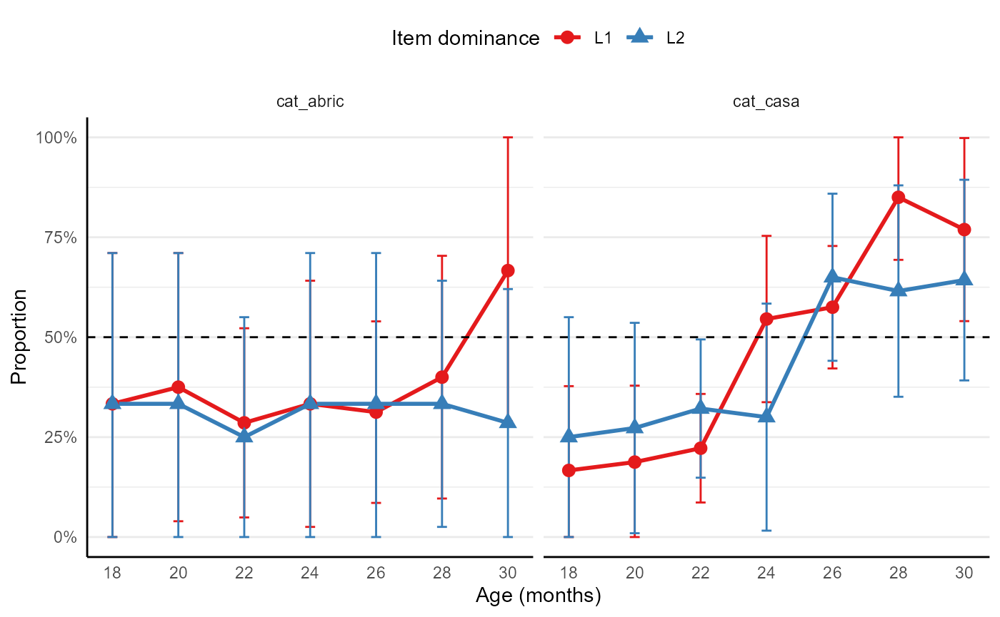

The function ml_norms computes the proportion of children in the sample that understand or produce each item. This function returns the estimated probability of an average participant to understand or produce each item, and allows to condition this probability to the age, language profile or language dominance of participants. Proportions and accompanying standard errors and confidence intervals are adjusted for zero- and one-inflation following Gelman, Hill, and Vehtari (2020) (see documentation of functions prop_adj, prop_adj_se, and prop_adj_ci).
If argument item is left NULL (default), proportions are computed for all items (currently nrow(pool)). This may take time. If you need to compute norms for specific items, you can provide the item identifiers in the item argument. Available items can be consulted in the pool data set:
library(multilex)
data("pool")
head(pool)
#> # A tibble: 6 x 15
#> item te language category class label ipa ipa_flat cognate label_subtlex
#> <chr> <int> <chr> <chr> <chr> <chr> <chr> <chr> <lgl> <chr>
#> 1 cat_~ 1 Catalan Action ~ Verb (fer~ p<U+0259>.s~ p<U+0259>si<U+0263><U+0254><U+028E>~ FALSE pessigolles
#> 2 cat_~ 2 Catalan Action ~ Verb abra~ <U+0259>.ß<U+027E>~ <U+0259>ß<U+027E><U+0259>sa TRUE abraçar
#> 3 cat_~ 3 Catalan Action ~ Verb obrir u'ß<U+027E>i uß<U+027E>i TRUE obrir
#> 4 cat_~ 4 Catalan Action ~ Verb acab~ <U+0259>.k<U+0259>~ <U+0259>k<U+0259>ßa TRUE acabar
#> 5 cat_~ 5 Catalan Action ~ Verb llan~ <U+028E><U+0259>n'~ <U+028E><U+0259>nsa TRUE llançar
#> 6 cat_~ 6 Catalan Action ~ Verb apag~ <U+0259>.p<U+0259>~ <U+0259>p<U+0259><U+0263>a TRUE apagar
#> # ... with 5 more variables: frequency_million <dbl>, frequency_zipf <dbl>,
#> # include <lgl>, version <list>, comments <chr>This is an example of how to use the ml_norms function for a specific set of items:
First we log in:
# get participant information and responses (load last update)
p <- ml_participants()
r <- ml_responses(p, update = FALSE)
#> Loading last update (2022-05-24 13:06:56) ...
my_norms <- ml_norms(
participants = p,
responses = r,
item = c("cat_casa", "cat_abric"),
type = "produces", # get data for production
age = c(16, 30), # get data for participants aged 15 to 30 months
lp = c("Bilingual") # get data for bilinguals (exclude monolinguals and others)
)
#> You are now connected!
head(my_norms)
#> # A tibble: 6 x 15
#> te item language age_bin type lp category item_dominance label yes
#> <int> <chr> <chr> <dbl> <chr> <chr> <chr> <chr> <chr> <int>
#> 1 241 cat_a~ Catalan 18 produ~ Bili~ Clothes L1 abric 0
#> 2 241 cat_a~ Catalan 20 produ~ Bili~ Clothes L1 abric 1
#> 3 241 cat_a~ Catalan 22 produ~ Bili~ Clothes L1 abric 2
#> 4 241 cat_a~ Catalan 24 produ~ Bili~ Clothes L1 abric 1
#> 5 241 cat_a~ Catalan 26 produ~ Bili~ Clothes L1 abric 3
#> 6 241 cat_a~ Catalan 28 produ~ Bili~ Clothes L1 abric 2
#> # ... with 5 more variables: n <int>, proportion <dbl>, se <dbl>,
#> # ci_lower <dbl>, ci_upper <dbl>Visualised, these data look like this:
library(ggplot2)
library(scales)
ggplot(my_norms, aes(age_bin, proportion, colour = item_dominance, fill = item_dominance, shape = item_dominance)) +
facet_grid(~item) +
geom_line(size = 1) +
geom_hline(yintercept = 0.5, linetype = "dashed") +
geom_errorbar(aes(ymin = ci_lower, ymax = ci_upper, width = 0.3)) +
geom_point(size = 3) +
labs(x = "Age (months)", y = "Proportion", colour = "Item dominance", fill = "Item dominance", shape = "Item dominance") +
scale_colour_brewer(palette = "Set1") +
scale_x_continuous(breaks = seq(16, 30, 2)) +
scale_y_continuous(limits = c(0, 1), labels = percent) +
theme_minimal() +
theme(
axis.line = element_line(colour = "black"),
legend.position = "top",
panel.grid.major.x = element_blank(),
panel.grid.minor.x = element_blank()
)